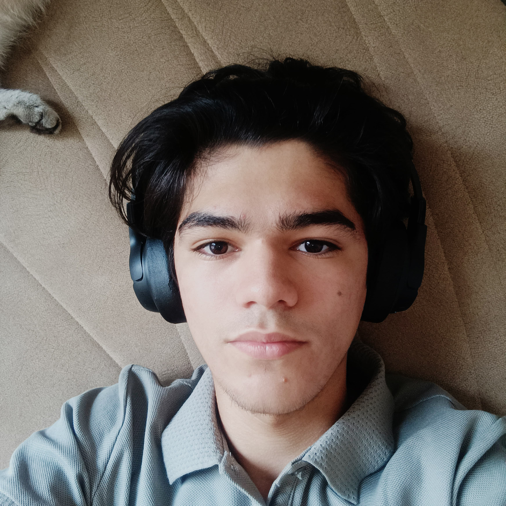

Who am I?
Hi everybody 😉. I am Shamil Mammadov. I am 18 yo. I live in Azerbaijan in Sumgait. I was born in 28.06.2007 in Sumgait. I finished the first year of university and am moving on to my second year.
Let's talk about my character. I am a cheerful, positive, happy and a little shy person. I love the truth, I am straightforward, a little soft and attentive.
My hobbies:
-
Chess:
I began playing chess professionally at the age of 5. I took many first, second, and third places, and I have lots of diplomas, medals, and also a couple of trophies. But unfortunately, after moving to 9th grade and the start of school workload, I had to partially quit chess. The same happened in 10th grade. But in 11th grade, I was forced to leave chess completely. Now, after 11 years in chess, I no longer play professionally, and alas, the interest I once had is gone. But I don’t regret spending so much of my time on it!
Thanks to chess, I visited many cities and countries, met a huge number of people, and gained lots of emotions and memories. But it’s not all sad—sometimes I still log in and play online chess.
-
Listening music:
I love to listen to music while I am studying, while I am on the road, while I am doing housework, when I want to relax.
-
Watching something:
In my free time I love to watch anime, films, series, doramas, multfilms.
-
Talking/Chatting with friedns:
Also in my free time, I love hanging out with friends - we chat about everything, laugh, have fun, fool around, and do whatever comes to mind.
-
Playing games:
In the past, I used to love playing games a lot. It was impossible to tear me away from them. But as I grew older, I began to understand more and more that spending all my time on games wasn’t worth it. You need to do other things, too. Nowadays, I only play games occasionally—with friends, comrades, and my brother.